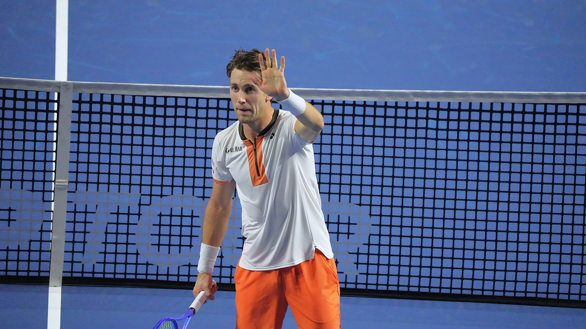

Michael Jackson
Publicerad 2026-11-12 13.44
Anledningen är att norsken har dragit på sig en lättare skada.
Beskedet kommer kort före kvartsfinalen mot amerikanen Taylor Fritz i Kungliga tennishallen i Stockholm.
”Jag fick en mindre skada i baksida lår i går och jag vill inte ta några risker genom att spela i dag. Jag vill starta den nya säsongen frisk. Vi ses snart igen, och tack för allt stöd,” skriver Casper Ruud i ett inlägg på Instagram.
Skadade sig förra året också
Stockholm är riktig olycksmark för Ruud. Han slet av hälsenan när han spelade Stockholm Open förra året. Han tvingades till operation och en lång rehabiliteringsperiod och har rasat på rankningen sedan dess.
Som bäst har han varit rankad fyra. Nu är han nere på plats 406.